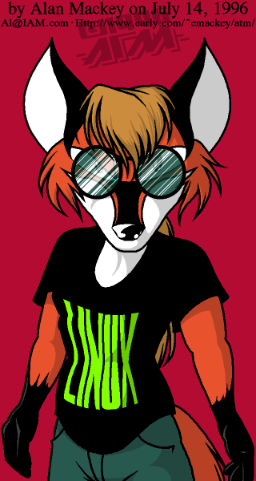

But Penguins aren't even Furry!

What you're looking at here is a new logo for Linux designed by
Al Mackey (who has more online art
available). Al has released it to the net, to be freely used by
anyone promoting Linux or Linux-related software/hardware/material.
Specifically, LinuxFox here is designed to be the #1 competitor to
a certain cute and cuddly penguin. The penguin is nice and all, but
it doesn't really remind me of a lean and mean multitasking/networking
machine. LinuxFox, on the other hand, is clearly a hard-core Linux coder. :-)
This larger version of LinuxFox might be useful for something, but it
is not anti-aliased, so it doesn't look as good on the screen. It's big,
though.
Cheesy LinuxFox Web Buttons
I made some little buttons and things that say "Powered by
Linux" that you can slap on your Web pages. These are not real
hard to make, so if you make some better ones out of LinuxFox, please
send me email.
Page last modified 8/26/98 by Ed Mackey. Artwork and character design by Al Mackey. Copyright ©1996,
all rights reserved. Freely distributable with anything having to do with Linux.
My Home Page needs to be updated soon.
Al's email address is Al@IAM.com.
{kind=link}
{kind=link}
{kind=link}
{kind=link}
{kind=link}